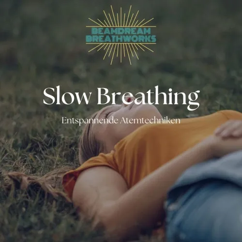
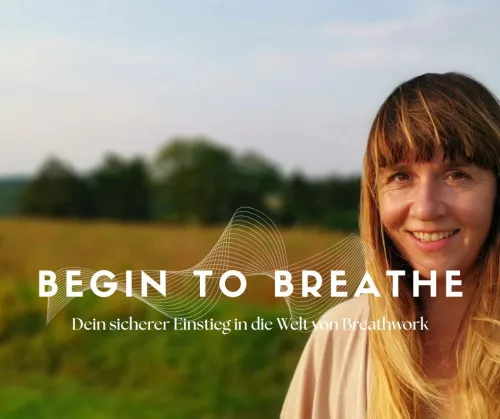

Slow Breathing — Teacher Modul für Nervensystemregulation
Produktprofil · Marktplatz-Daten 2026-10-14 · Verkaufsseiten-Recherche 2026-10-14 · Kategorien: Health & Fitness
- Slow Breathing — Teacher Modul für Nervensystemregulation ist ein/e Mitgliederbereich & Videokurs in Health & Fitness, vertrieben über den Digistore24-Marktplatz von Anbieter BeamdreamBreathworks, gelistet seit 2026-08-16.
- Listenpreis $394.87 (single payment, installment) — Checkout, Auslieferung und Rückerstattungen laufen über Digistore24 selbst, nicht über den Anbieter.
- Käuferschutz: keine standardisierte Garantie-Formulierung gefunden — Rückerstattungsbedingungen vor der Zahlung auf der offiziellen Seite prüfen.
Interesse an Slow Breathing — Teacher Modul für Nervensystemregulation? Aktueller Preis, Boni und Garantiebedingungen finden Sie auf der offiziellen Seite des Anbieters:
Offizielle Verkaufsseite ansehen
Affiliate-Link (Werbung) — wir verdienen ggf. eine Provision, ohne Mehrkosten für Sie.

Marktplatz-Daten
| Produkttyp | Mitgliederbereich & Videokurs |
|---|---|
| Preis | $394.87 (Single payment, Installment) |
| Garantie/Rückgabe | Laut Verkaufsseite des Anbieters — vor dem Kauf auf der offiziellen Seite prüfen |
| Anbieter | BeamdreamBreathworks (gelistet seit 2026-08-16) |
Marktplatz-Beschreibung des Anbieters
Die Weiterbildung für alle, die mit gestressten und überstimulierten Klient:innen arbeiten. Fokus auf Regulation statt Aktivierung. 3 Module, fast 4 Stunden Videomaterial: Grundlagen der Atmung – Mechanik, Zwerchfell, Physiologie Atem und Nervensystem – HRV, Vagusnerv, Polyvagaltheorie, Kontraindikationen Atemtechniken und Didaktik – vier Techniken, Lehraufbau, professionelle Haltung Dazu: PDF-Skripte, geführte Meditationen und ein Atemtagebuch. Für wen: Atemtherapeut:innen, Yogalehrende, Coaches und Therapeut:innen. Ohne Voraussetzungen buchbar – weder medizinisches Vorwissen noch ein bestehendes Beamdream-Zertifikat nötig. Warum es konvertiert: 390 € einmalig oder in Raten (3 x 135 € / 6 x 70 €), sofortiger Zugang, Teilnahmezertifikat. Der niedrigschwellige Einstieg ohne Vorbedingungen öffnet die gesamte Yoga- und Coaching-Szene als Zielgruppe.
Von der Verkaufsseite des Anbieters
Seitentitel: Slow Breathing Ausbildung online | Nervensystem regulieren & lehren | Beamdream Breathworks
Meta-Beschreibung: Sanfte Atemarbeit fundiert weitergeben. Für Breathwork-Lehrer*innen & Profis, die Menschen in Stress & Übererregung sicher begleiten möchten.
Hauptüberschrift
SLOW BREATHING
Abschnitts-Überschriften
- Weniger ist mehr
- Standard-Breathwork aktiviert. Manchmal ist das genau falsch.
- Atemarbeit, die reguliert statt aktiviert.
- Slow Breathing verbindet
- Was du danach kannst:
- Dieser Kurs ist für dich, wenn....
- 3 Module Slow Breathing
- 01.
- Grundlagen der Atmung
- 02.
Einstiegstext
Deine Klientinnen kommen erschöpft, überdreht, chronisch gestresst. Ihr Nervensystem ist bereits im Overdrive. Und dann gibst du ihnen Aktivierung obendrauf.
Was passiert? Im besten Fall: nichts. Im schlechtesten Fall: du überforderst jemanden, die ohnehin schon am Limit ist.
Das ist keine Kritik an deiner Ausbildung. Das ist eine Lücke - in fast jeder Breathwork-Ausbildung da draußen.
Slow Breathing nutzt die Kraft des verlängerten Ausatmens, der sanften Rhythmik und einer ruhigen Präsenz - um das zu aktivieren was bereits in uns angelegt ist: Sicherheit, Verbundenheit, innere Balance.
Recherche-Methode: rohes HTML · 944 Wörter · Qualität: rich · recherchiert am 2026-10-14. Vollständige Recherche-Datei (MD) ↗
Anwendung — laut Anbieter
✓ 4 Atemtechniken inkl. Anleitung, Wirkung und Lernkarten für deine Klientinnen
Du hast noch Fragen zum Ablauf, zu den Voraussetzungen oder zur Anwendung in deiner Praxis? Hier findest du die wichtigsten Antworten rund um das Slow Breathing Teacher Modul – klar, ehrlich und auf den Punkt gebracht.
Weitere Bilder (von der Verkaufsseite des Anbieters)
Bilder stammen von der offiziellen Verkaufsseite des Anbieters und zeigen das Produkt, wie es beworben wird.
Gut zu wissen
- Hoher Preis: $394.87 ist eine erhebliche Ausgabe — prüfen Sie, ob es einen Zahlungsplan gibt, und vergleichen Sie zuerst die günstigeren Alternativen der Kategorie.
- Keine Garantie-Formulierung in unserer Recherche gefunden — bestätigen Sie das Rückgabefenster auf der offiziellen Seite, bevor Sie kaufen.
Was ist Slow Breathing — Teacher Modul für Nervensystemregulation?
Slow Breathing — Teacher Modul für Nervensystemregulation ist ein/e mitgliederbereich & videokurs in der Kategorie Gesundheit & Fitness des Digistore24-Marktplatzes, veröffentlicht von Anbieter BeamdreamBreathworks und im Verkauf seit 2026-08-16. Der Anbieter beschreibt es so: "Die Weiterbildung für alle, die mit gestressten und überstimulierten Klient:innen arbeiten. Fokus auf Regulation statt Aktivierung. 3 Module, fast 4 Stunden Videomaterial: Grundlagen der Atmung – Mechanik, Zwerchfell, Physiologie Atem und Nervensystem – HRV, V" (Marktplatz-Beschreibung des Anbieters, leicht gekürzt).
Slow Breathing — Teacher Modul für Nervensystemregulation Preis: was Sie zahlen
Der Marktplatz listet Slow Breathing — Teacher Modul für Nervensystemregulation zum $394.87 Preis (single payment, installment). Digistore24 fügt im Checkout die gesetzliche Steuer Ihres Landes hinzu — dort sehen Sie den Endbetrag vor der Zahlung. Eine separate Plattformgebühr gibt es nicht; Anbieter können eigene Upsells nach dem Checkout anbieten.
Slow Breathing — Teacher Modul für Nervensystemregulation Rückerstattung und Geld-zurück-Garantie
Wir haben keine standardisierte Garantie-Formulierung auf der Verkaufsseite gefunden. Rückerstattungen für Digistore24-Käufe laufen über die Plattform: Antrag über den Support-Link in Ihrer Bestell-E-Mail, innerhalb des Garantiezeitfensters, das im Checkout angezeigt wird. Praktischer Rat: Entscheiden Sie innerhalb des Fensters — wenn das Produkt unter den Erwartungen bleibt, erstatten lassen statt irren lassen.
Mechanik im Detail: So funktionieren Digistore24-Rückerstattungen.
Für wen ist Slow Breathing — Teacher Modul für Nervensystemregulation geeignet?
Basierend auf der Gesundheit & Fitness-Einordnung und der single payment, installment-Abrechnung richtet sich Slow Breathing — Teacher Modul für Nervensystemregulation an Käufer, die gesundheit & fitness-Lösungen suchen und ein Budget für einen Premium-Kauf eingeplant haben. Der ehrliche Test ist nicht die Kategorie, sondern Ihre eigene Situation: Werden Sie es realistisch innerhalb des Garantiefensters nutzen? Wenn ja, ist der Preis eine Investition; wenn nein, ist er Ballast — unabhängig von der Qualität.
Ist Slow Breathing — Teacher Modul für Nervensystemregulation seriös? Was Sie vor dem Kauf prüfen
Wir bewerten keine Seriosität — das kann niemand, ohne das Produkt zu nutzen. Prüfbare Punkte, alle auf dieser Seite: die Marktplatz-Historie des Anbieters (im Verkauf seit 2026-08-16), die wörtlichen Verkaufsseiten-Auszüge unten (gekennzeichnet als Anbieteraussagen — deren Werbung, nicht unsere Empfehlung), die Garantiebedingungen im Checkout und die Auslieferungsart. Vorsichtsignale bei jedem Angebot: Countdown-Dringlichkeit gepaart mit vagen Rückerstattungsbedingungen, Testimonials ohne Datum und Anbieterseiten, die den Preis bis zum Checkout verstecken.
Wie kommen Sie nach dem Kauf an Slow Breathing — Teacher Modul für Nervensystemregulation?
Der Checkout läuft über Digistore24. Nach der Zahlung: Videokurse laufen über einen Mitgliederbereich: nach dem Checkout erhalten Sie Zugangsdaten per E-Mail und können die Lektionen in Ihrem eigenen Tempo streamen. Bewahren Sie die Bestell-E-Mail auf — sie ist Ihr Schlüssel zum/d zur mitgliederbereich & videokurs, zu Rückerstattungsanträgen und zum Digistore24-Käufersupport.
Slow Breathing — Teacher Modul für Nervensystemregulation Erfahrungen: so recherchieren Sie richtig
Die meisten „Erfahrungsberichte" zu Marktplatz-Produkten sind Affiliate-Inhalte — einschließlich Seiten wie dieser, die an Käufen mitverdienen. Behandeln Sie jeden Bericht (auch unseren) als Ausgangspunkt und prüfen Sie gegen Primärquellen: die Verkaufsseite des Anbieters, die Digistore24-Rückerstattungsrichtlinie und — für gesundheit & fitness — unabhängige Communities außerhalb des Affiliate-Ökosystems. Auf dieser Seite sind die Verkaufsseiten-Auszüge unten wörtlich zitiert, damit Sie die Aussagen des Anbieters bewerten können, ohne wegzuklicken.
Wie Sie Slow Breathing — Teacher Modul für Nervensystemregulation sicher kaufen
- Öffnen Sie die offizielle Verkaufsseite und lesen Sie das vollständige Angebot.
- Bestätigen Sie Endpreis und Garantiezeitfenster auf der Digistore24-Kassenseite — sie ist bindend, kein Vergleichsportal.
- Zahlen Sie innerhalb des Digistore24-Checkouts (niemals per Überweisung oder Off-Platform-Links).
- Speichern Sie die Bestellbestätigung; notieren Sie die Rückerstattungsfrist im Kalender.
- Prüfen Sie zügig. Der Digistore24-Käufersupport hilft, wenn der Anbieter nicht reagiert.
Vollständiges Recherche-Archiv für dieses Produkt (Markdown: kompletter Marktplatz-Datensatz + wörtliche Verkaufsseiten-Auszüge): Slow Breathing — Teacher Modul für Nervensystemregulation — Datenarchiv (.md).
- Listenpreis & Abrechnung — Quelle: offizielle Digistore24-Marktplatz-API, Stand 2026-10-14. Maßgeblich für den aktuellen Preis ist immer die Kassenseite.
- Verkaufsseiten-Zitate — Quelle: https://www.beamdream.com/slow-breathing-teacher-modul, abgerufen 2026-10-14 (Methode: rohes HTML). Verify: offizielle Seite öffnen.
- Garantie / Rückgabe — vom Anbieter festgelegt; vor dem Kauf auf der Verkaufsseite bestätigen.
- Nicht von uns geprüft: Produktqualität, Ergebnisse, Testimonials — kein Praxistest für dieses Listing durchgeführt.
Häufige Fragen zu Slow Breathing — Teacher Modul für Nervensystemregulation
Antworten aus dem Marktplatz-Snapshot (2026-10-14) und der Verkaufsseiten-Recherche (2026-10-14); Anbieteraussagen sind inline gekennzeichnet.
Was ist Slow Breathing — Teacher Modul für Nervensystemregulation?
Slow Breathing — Teacher Modul für Nervensystemregulation ist ein Angebot des Typs „Mitgliederbereich & Videokurs" im Digistore24-Marktplatz, Anbieter: BeamdreamBreathworks, gelistet seit 2026-08-16. Eingepflegt unter Gesundheit & Fitness. Digistore24 wickelt Checkout, Lieferung und Rückgaben ab.
Wie viel kostet Slow Breathing — Teacher Modul für Nervensystemregulation?
Der Digistore24-Marktplatz listet es für $394.87 (single payment, installment). Preise legt der Anbieter fest und können sich ändern — der Marktplatz-Eintrag oben zeigt den Schnappschuss; die offizielle Verkaufsseite zeigt den aktuellen Preis.
Gibt es eine Geld-zurück-Garantie für Slow Breathing — Teacher Modul für Nervensystemregulation?
Unsere Verkaufsseiten-Recherche hat keine explizite Garantie-Formulierung gefunden. Viele Digistore24-Produkte bieten 60 Tage Geld-zurück, aber das legt jeder Anbieter selbst fest — bestätigen Sie es auf der offiziellen Verkaufsseite, bevor Sie kaufen.
Ist Slow Breathing — Teacher Modul für Nervensystemregulation seriös?
Wir bewerten keine Seriosität — wir veröffentlichen überprüfbare Zahlen: Anbieter BeamdreamBreathworks (gelistet seit 2026-08-16), mit der vollständigen Verkaufsseiten-Recherche archiviert auf dieser Seite (Anbieteraussagen als solche gekennzeichnet). Lesen Sie unsere 6-Punkte-Bewertungsmethode und entscheiden Sie anhand der Zahlen — oder diskutieren Sie Slow Breathing — Teacher Modul für Nervensystemregulation auf GitHub.
Wo kann ich Slow Breathing — Teacher Modul für Nervensystemregulation sicher kaufen?
Nur über die offizielle Verkaufsseite, die auf dieser Seite verlinkt ist (Checkout und Rückgaben laufen über Digistore24). Prüfen Sie dort Preis und Garantie vor der Bestellung. Der Link ist ein Affiliate-Link — der Kauf unterstützt diese Website ohne Mehrkosten für Sie.
Wie erhalte ich Slow Breathing — Teacher Modul für Nervensystemregulation nach der Zahlung?
Der Checkout läuft über Digistore24: Nach der Zahlung erhalten Sie Ihren Zugang oder Download per E-Mail und in Ihrem Digistore24-Kundenkonto. Lieferdetails für diesen Produkttyp: Videokurse laufen über einen Mitgliederbereich: nach dem Checkout erhalten Sie Zugangsdaten per E-Mail und können die Lektionen in Ihrem eigenen Tempo streamen. Bei Problemen kann der Digistore24-Käufersupport Ihre Bestellung wiederherstellen.
Alle 50 Käuferfragen zu Gesundheit & Fitness — das komplette Kategorie-FAQ.
Slow Breathing — Teacher Modul für Nervensystemregulation auf Reddit diskutieren
In Community-Threads vergleichen echte Käufer Erfahrungen. Wir verlinken Communities, keine einzelnen Posts — Threads verschwinden, Subreddits bleiben:
- r/FITNESS — deutschsprachige Community mit Diskussionen zu health & fitness.
- Reddit-Suche nach „Slow Breathing — Teacher Modul für Nervensystemregulation" — Live-Ergebnisse, von uns nicht beeinflusst.
- Top-„Erfahrungs"-Treffer dieses Jahr — selbst nach Aktualität filtern.
Passendes auf Amazon.de
Physische Produkte und Zubehör, die häufig zusammen mit Slow Breathing — Teacher Modul für Nervensystemregulation gekauft werden:
- Nahrungsergänzung auf Amazon.de — Top-Ergebnisse, Amazon-Ranking.
- Bestseller: Nahrungsergänzung — live Liste von Amazon, von uns nicht kuratiert.
Werbung: Als Amazon-Partner verdient DigistorePicks DE an qualifizierten Käufen (Partner-tag adminstorede-21). Amazon setzt eigene Preise und Provisionen (niedrige einstellige Prozente — weit unter den 30–75% der Digistore24-Anbieter). Amazon ist ein Convenience-Angebot für Sachprodukte, kein Ersatz für das digitale Produkt oben.
Ähnliche Angebote in Gesundheit & Fitness

Eine vollständig strukturierte, medizinisch fundierte Online-Ausbildung zur Vorbereitung auf die Heilpraktikerprüfung – mit klarem Curriculum, systematischem Au

Online Ausbildung zum Holistic Skin & Health Expert, staatlich Zugelassen mit Abschlusszertifikat ( 6 Monate) Werde zertifizierter Holistic Skin & Healt

1:1 Online Training per Video Mentale Klarheit auf Knopfdruck – mitten im echten Leben. Stell dir vor, du könntest deinen Fokus, deine Gelassenheit und deine Wa

bis zu 10% Provision | 600.000€ Umsatzpotenzial für 2026 Marktplatz-Beschreibung Sichern Sie sich Ihren Anteil am Erfolg: Wir suchen exklusive Partner für ein 6
Weitere Angebote von BeamdreamBreathworks
Die meisten Trader scheitern nicht an ihrer Strategie. Sie scheitern an ihrem Zustand. FOMO. Revenge Trading. Overtrading. Panic Exit. Paralysis. Das sind keine

Die einzige Ausbildung in einer Methode, die es ausschließlich bei Beamdream Breathworks gibt: verbundener Atem kombiniert mit neurogenem Zittern. Über 4 Stunde

Der Einsteigerkurs für alle, die Breathwork zum ersten Mal richtig lernen wollen – sicher, strukturiert und ohne Vorwissen. 4 Module, über 25 Videos, mehr als 4
Ähnliche Preislage in Gesundheit & Fitness

Hallo lieber Affiliate, wenn du dieses Produkt bewirbst, dann kannst du auf satte 50% Provision pro Verkauf rechnen. Zu jeder Zeit bin ich für dich per Email ab

Pilates&Friends Abo Das Online Pilates Paket Das Pilates&Friends Abo ist die Standardmitgliedschaft, die monatlich, halbjährlich oder jährlich abgeschlo

Mit dem Online Kurs Tinnitus meistern Betroffene ihren Tinnitus. Auch Begleiterscheinungen wie Schlafstörungen, Ängste, depressive Verstimmungen, etc. verbesser

50% Provision, hochoptimierter Funnel - i nkl. Remarketing auf unsere Kosten! Die modernste und wissenschaftlich fundierte Tinnitus-Selbsttherapie für zuhause a
Ähnliche Suchanfragen
Wo Sie es sich ansehen können
Wo Sie es sich ansehen können
Aktuelle Preise, Garantie und Boni finden Sie auf der offiziellen Verkaufsseite:
Offizielle Verkaufsseite ansehen
Das ist ein Affiliate-Link (Werbung) — kaufen Sie darüber, verdienen wir ggf. eine Provision, ohne Mehrkosten für Sie.
Quellen & weiterführende Informationen
- Offizielle Verkaufsseite (aktueller Preis, Garantie, Boni): www.beamdream.com/relax-breathwork-ausbildung (Affiliate-Link)
- Öffentliche Digistore24-Produktseite: checkout-ds24.com/product/663320
- Vollständige Recherche-Datei (Markdown, versioniert): content/products/58402-slow-breathing-teacher-modul-f-r-nervensystemregulation.md
- Marktplatz-Kategorie: Gesundheit & Fitness
Wie wir Produkte wie Slow Breathing — Teacher Modul für Nervensystemregulation bewerten
Sechs Prüfungen, ausschließlich mit offiziellen Marktplatz-Zahlen. Die vollständige Bewertungsmethode lesen · unsere Recherche-Standards & Kennzeichnung.
Fragen oder eigene Erfahrungen mit Slow Breathing — Teacher Modul für Nervensystemregulation?
Praxis-Tests veröffentlichen wir erst, nachdem wir ein Produkt selbst gekauft haben — aber Ihre Erfahrung hilft anderen Lesern: Diskussion zu Slow Breathing — Teacher Modul für Nervensystemregulation auf GitHub starten/verfolgen. Falsche Zahl gefunden? Korrektur melden — jede Seite zeigt ihre Datenstände, Korrekturen gelten für die ganze Website.